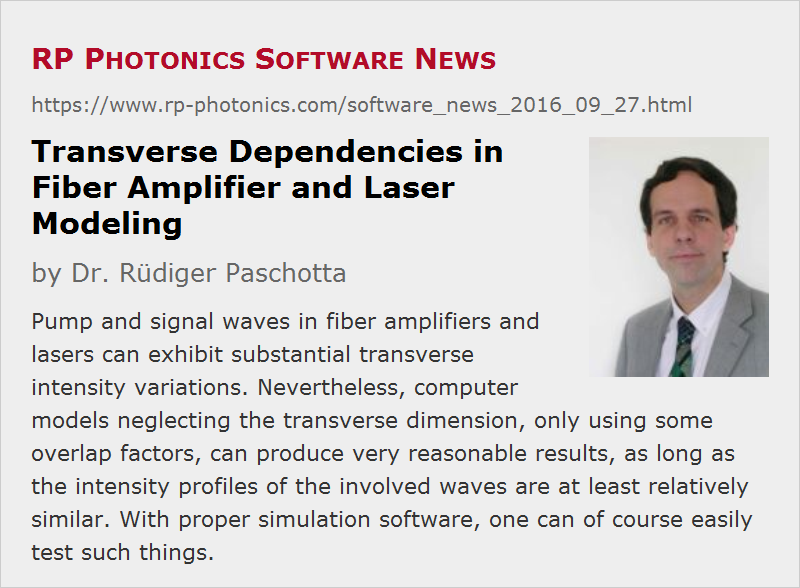

Transverse Dependencies in Fiber Amplifier and Laser Modeling
Posted on 2016-09-27 in the RP Photonics Software News (available as e-mail newsletter!)
Permanent link: https://www.rp-photonics.com/software_news_2016_09_27.html
Author: Dr. Rüdiger Paschotta, RP Photonics Consulting GmbH
Abstract: Pump and signal waves in fiber amplifiers and lasers can exhibit substantial transverse intensity variations. Nevertheless, computer models neglecting the transverse dimension, only using some overlap factors, can produce very reasonable results, as long as the intensity profiles of the involved waves are at least relatively similar. With proper simulation software, one can of course easily test such things.

When modeling fiber amplifiers or fiber lasers, one encounters the question whether or not to take into account the transverse variation on optical intensities in and around the fiber core. At a first glance, one may think that this is indispensable, since the optical intensities can indeed vary quite a lot within such a fiber core. As an example, let us consider an ytterbium-doped single-mode fiber amplifier operating at 1060 nm, having a core radius of 3.8 μm and a numerical aperture of 0.1. That leads to a reasonable single-mode cut-off of 990 nm, i.e., single-mode operation around 1060 nm. Figure 1 shows the mode profiles in red and blue color, also the Yb excitation profiles at the input and output of the fiber for a pump power of 800 mW at 940 nm (injected into the fundamental mode) and a signal input power of 10 mW at 1060 nm:
One can clearly see that the pump and signal mode intensities vary strongly within the fiber core. Assuming that the ytterbium dopant is uniformly distributed over the core, the ytterbium ions will “see” correspondingly different optical intensities for any given optical power. Nevertheless, the also shown ytterbium excitation densities (orange curves) do not vary that much. (For a pump wavelength of 975 nm, the dependence would even be much weaker.) It turns out that the excitation at the input is mainly determined by the pump intensity, but it is not proportional to that due to strong saturation (with excitation densities above 80%!). Similarly, the excitation profile at the output end, being mainly determined by the signal power there, is relatively flat.
I have built an accurate amplifier model, using our software RP Fiber Power, where I divided the fiber core into 30 radial segments. The software then calculates the optical intensities at any z position separately for each radial segment, and from that it obtains the radially dependent Yb excitations. From that it can then calculate the local signal gain and pump absorption. Figure 2 shows the evolution of pump and signal power and also the (transversely averaged) Yb excitation along the fiber:
One can see that most of the pump power is absorbed, and much of the input pump power is converted into signal output power. I then did the same simulation for a crude model, totally ignoring the transverse dependencies; effectively, it replaces the signal and pump profiles by top-hat functions, having a uniform intensity throughout the fiber core and no intensity outside. It is then not necessary to distinguish different radial segments of the fiber core. In order to take into account the finite overlap of the mode fields with the doped fiber core, the software also calculates an overlap factor for each mode, which slightly reduces the coupling with the Yb dopant. You may be surprised, but the results are nearly the same as before! The signal output power just drops by ≈0.37%, and the modified version of Figure 2 can hardly be distinguished from the one shown above.
Such discrepancies become substantially larger if we consider a somewhat artificial case, where we now inject the pump light into the LP11 modes, obtaining a doughnut-shaped pump profile. The transverse dependencies are then quite pronounced:
The power conversion is now significantly worse than before, essentially because the pump power can now be less effectively absorbed, and the Yb excitation are large radial positions can be less well utilized by the signal:
If one now neglects the transverse dependencies (just using overlap factors for both fields), the results change substantially; for example, the signal output power rises from 417 mW to 467 mW. Essentially, that simplification removes the detrimental (but realistic) aspect that pumping preferentially excites Yb ions at radial positions where the signal wave does not have that much intensity and can therefore profit less in terms of gain.
Some Conclusions and Remarks
The shown results suggest – in agreement with my experience in other cases – that one can quite safely ignore the transverse dependencies (only using overlap factors) in amplifier or laser models as long as pump and signal waves have similar transverse intensity profiles. For substantially different transverse profiles, that may not be the case; a more sophisticated model, properly treating the transverse dependencies, is then required for accurate results.
The mentioned overlap factors should not be dropped, of course; even though they are often not far below 1, they usually influence the results significantly.
With a proper software such as our product RP Fiber Power, it is no problem to properly deal with transverse dependencies – not only of optical intensities, but also concerning doping profiles. It is only that the user then has to provide some more details, and that the computation time gets longer. The latter aspect is often negligible, since many calculations are anyway so fast on an ordinary PC. By the way, having 30 radial segments for the above demonstration was kind of an overkill, but I chose that to obtain nice-looking diagrams for the transverse dependencies. In many cases, one may just look at few test cases with high transverse resolution in order to check how much transverse resolution is really required.
I would also like to mention that spectroscopic data for active fibers are often calculated based on calculations ignoring transverse dependencies. For example, a uniform laser-active dopant concentration over the whole core is assumed even if that assumption is not really valid. One may then not obtain an increased accuracy of results when using such data together with a more sophisticated model.
This article is a posting of the RP Photonics Software News, authored by Dr. Rüdiger Paschotta. You may link to this page, because its location is permanent.
Note that you can also receive the articles in the form of a newsletter or with an RSS feed.
|  |
If you like this article, share it with your friends and colleagues, e.g. via social media:
These sharing buttons are implemented in a privacy-friendly way!